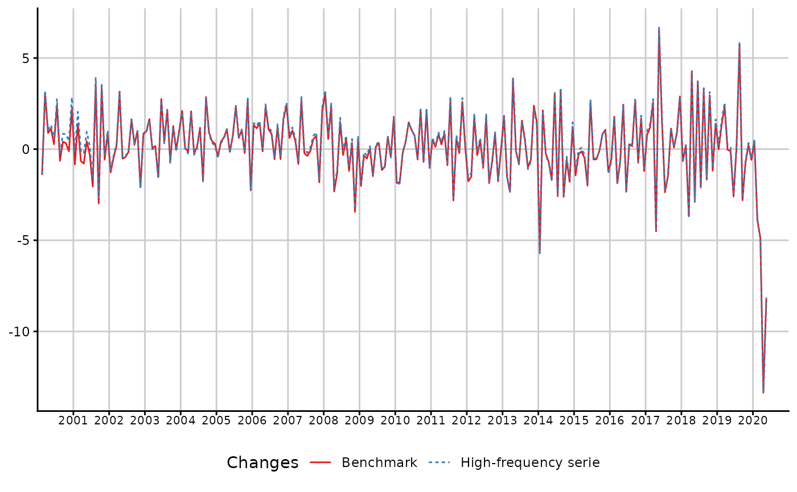

Bends a time series with a lower frequency one by smoothing their rate
Source:R/threeRuleSmooth.R
threeRuleSmooth.RdthreeRuleSmooth bends a time series with a time series of a lower frequency. The procedure involved is a proportional Denton benchmark.
Therefore, the resulting time series is the product of the high frequency input with a smoothed rate. This latter is extrapolated through an arithmetic sequence.
The resulting time series is equal to the low-frequency series after aggregation within the benchmark window.
Usage
threeRuleSmooth(
hfserie,
lfserie,
start.benchmark = NULL,
end.benchmark = NULL,
start.domain = NULL,
end.domain = NULL,
start.delta.rate = NULL,
end.delta.rate = NULL,
set.delta.rate = NULL,
...
)Arguments
- hfserie
the bended time series. It can be a matrix time series.
- lfserie
a time series whose frequency divides the frequency of
hfserie.- start.benchmark
an optional start for
lfserieto bendhfserie. Should be a numeric of length 1 or 2, like a window forlfserie. If NULL, the start is defined by lfserie's window.- end.benchmark
an optional end for
lfserieto bendhfserie. Should be a numeric of length 1 or 2, like a window forlfserie. If NULL, the start is defined by lfserie's window.- start.domain
an optional start of the output high-frequency series. It also defines the smoothing window : The low-frequency residuals will be extrapolated until they contain the smallest low-frequency window that is around the high-frequency domain window. Should be a numeric of length 1 or 2, like a window for
hfserie. If NULL, the start is defined by hfserie's window.- end.domain
an optional end of the output high-frequency series. It also defines the smoothing window : The low-frequency residuals will be extrapolated until they contain the smallest low-frequency window that is around the high-frequency domain window.
- start.delta.rate
an optional start for the mean of the rate difference. It is required as a common difference for the arithmetical extrapolation of the rate. Should be a numeric of length 1 or 2, like a window for
lfserie. If NULL, the start is defined by lfserie's window.- end.delta.rate
an optional end for the mean of the rate difference. It is required as a common difference for the arithmetical extrapolation of the rate. Should be a numeric of length 1 or 2, like a window for
lfserie. If NULL, the end is defined by lfserie's window.- set.delta.rate
an optional double, that allows the user to set the delta mean instead of using a mean.
- ...
if the dots contain a cl item, its value overwrites the value of the returned call. This feature allows to build wrappers.
Value
threeRuleSmooth returns an object of class "threeRuleSmooth".
The functions plot and autoplot (the generic from ggplot2) produce
graphics of the benchmarked series and the bending series.
The functions in_disaggr, in_revisions, in_scatter
produce various comparisons on which plot and autoplot can also be used.
The generic accessor functions as.ts, model.list, smoothed.rate extract
various useful features of the returned value.
An object of class "threeRuleSmooth" is a list containing the following
components :
- benchmarked.serie
a time series, that is the result of the benchmark.
- lfrate
a time series, that is the low-frequency rate of the threeRuleSmooth.
- smoothed.rate
the smoothed rate of the threeRuleSmooth.
- hfserie.as.weights
the modified and extrapolated hfserie (see details).
- delta.rate
the low-frequency delta of the rate, used to extrapolate the low-frequenccy rate time series. It is estimated as the mean value in the specified window.
- model.list
a list containing all the arguments submitted to the function.
- call
the matched call.
Details
In order to smooth the rate, threeRuleSmooth calls bflSmooth and uses a modified and extrapolated version of hfserie as weights :
only the full cycles are kept
the first and last full cycles are replicated respectively backwards and forwards to fill the domain window.
Examples
## How to use threeRuleSmooth
smooth <- threeRuleSmooth(hfserie = turnover,
lfserie = construction)
as.ts(smooth)
#> Jan Feb Mar Apr May Jun Jul Aug
#> 2000 11.06619 10.90966 11.24713 11.34677 11.47367 11.50389 11.78207 11.70662
#> 2001 11.93738 12.10440 12.02528 11.92974 11.98169 11.94617 11.70081 12.11665
#> 2002 12.02328 11.96692 11.99124 12.35997 12.29531 12.24204 12.22374 12.42447
#> 2003 12.54435 12.75100 12.75790 12.77985 12.58319 12.92983 12.98059 13.26160
#> 2004 13.75079 13.75982 13.73898 14.02450 13.99243 14.01145 14.17607 13.93671
#> 2005 14.51607 14.57519 14.66748 14.82881 14.80669 14.91541 15.26859 15.36247
#> 2006 15.74988 15.93013 16.15802 16.13779 16.51347 16.69096 16.82981 16.73642
#> 2007 17.64423 17.82544 17.90017 17.75449 18.23133 18.18964 18.12256 18.10525
#> 2008 18.94128 19.04621 19.49569 19.04229 18.78460 19.06879 19.00690 19.10936
#> 2009 18.01370 17.95046 17.85820 17.86177 17.59637 17.62181 17.68003 17.47717
#> 2010 17.33063 17.01673 16.98637 17.05853 17.30907 17.49004 17.61829 17.51784
#> 2011 18.05347 18.07634 18.22165 18.26845 18.42569 18.26263 18.76117 18.23170
#> 2012 18.45228 18.17290 18.49420 18.43197 18.51898 18.32909 18.65596 18.30737
#> 2013 18.33968 18.06311 17.63937 18.32462 18.30529 18.16217 18.44701 18.54507
#> 2014 17.91173 18.29301 18.24840 18.11866 17.81191 18.35908 17.88502 18.46779
#> 2015 17.52080 17.47098 17.45010 17.36727 17.01955 17.46399 17.36402 17.26782
#> 2016 17.26166 17.56911 17.24063 17.13231 17.55119 17.14086 17.18737 17.21532
#> 2017 17.76754 17.98134 18.44488 17.61235 18.77362 19.05078 18.59970 18.32393
#> 2018 19.12743 19.17066 18.46457 19.25517 18.69679 19.39454 18.98717 19.59975
#> 2019 19.88045 20.14402 20.61334 20.60617 20.58282 20.04799 20.06142 21.20981
#> 2020 20.46805 19.66710 18.70284 16.20309 14.87604
#> Sep Oct Nov Dec
#> 2000 11.75422 11.79278 11.77840 12.03860
#> 2001 11.75568 12.14698 12.07688 12.17834
#> 2002 12.45412 12.57964 12.31633 12.42294
#> 2003 13.17174 13.33912 13.33362 13.46721
#> 2004 14.33527 14.46770 14.53112 14.57516
#> 2005 15.52185 15.48743 15.90448 15.54553
#> 2006 16.94146 16.84811 17.12663 17.53733
#> 2007 18.20307 18.33702 18.00267 18.38412
#> 2008 18.88023 18.94602 18.29306 18.38557
#> 2009 17.30693 17.42515 17.34998 17.65842
#> 2010 17.89461 17.76785 18.14909 17.96097
#> 2011 18.34001 18.29988 18.77538 18.78363
#> 2012 18.17942 18.33570 18.01195 18.01018
#> 2013 18.36070 18.25497 18.69067 18.96734
#> 2014 17.98413 17.88178 17.56100 17.77749
#> 2015 17.25113 17.39147 17.57728 17.35559
#> 2016 17.67971 17.54721 17.84495 17.62967
#> 2017 18.53118 18.54734 18.71306 19.25427
#> 2018 19.27183 19.84259 19.60735 19.88214
#> 2019 20.61475 20.45577 20.50227 20.38120
#> 2020
coef(smooth)
#> NULL
summary(smooth)
#> Length Class Mode
#> benchmarked.serie 245 ts numeric
#> lfrate 21 ts numeric
#> smoothed.rate 252 ts numeric
#> hfserie.as.weights 252 ts numeric
#> delta.rate 1 -none- numeric
#> model.list 9 -none- list
#> call 3 -none- call
library(ggplot2)
autoplot(in_disaggr(smooth))
